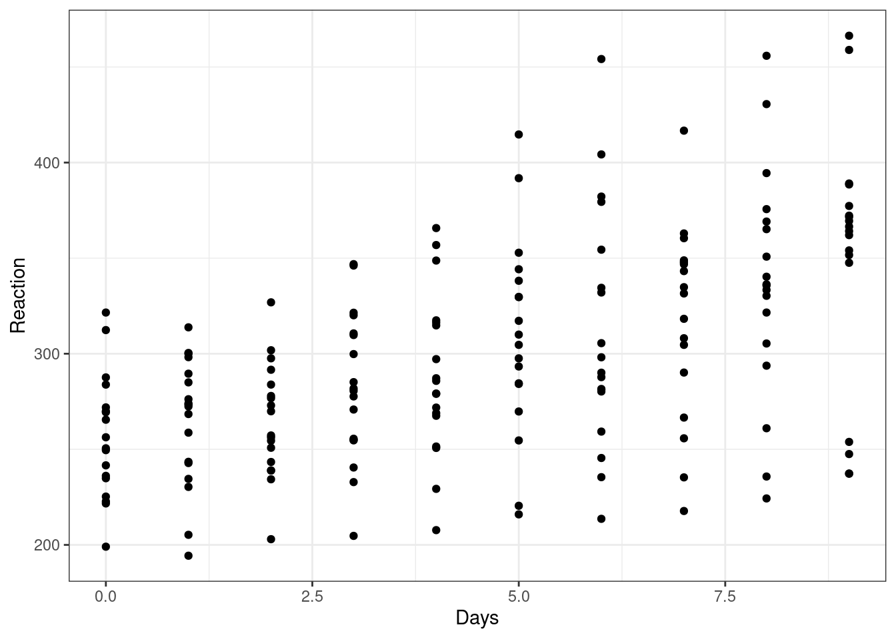
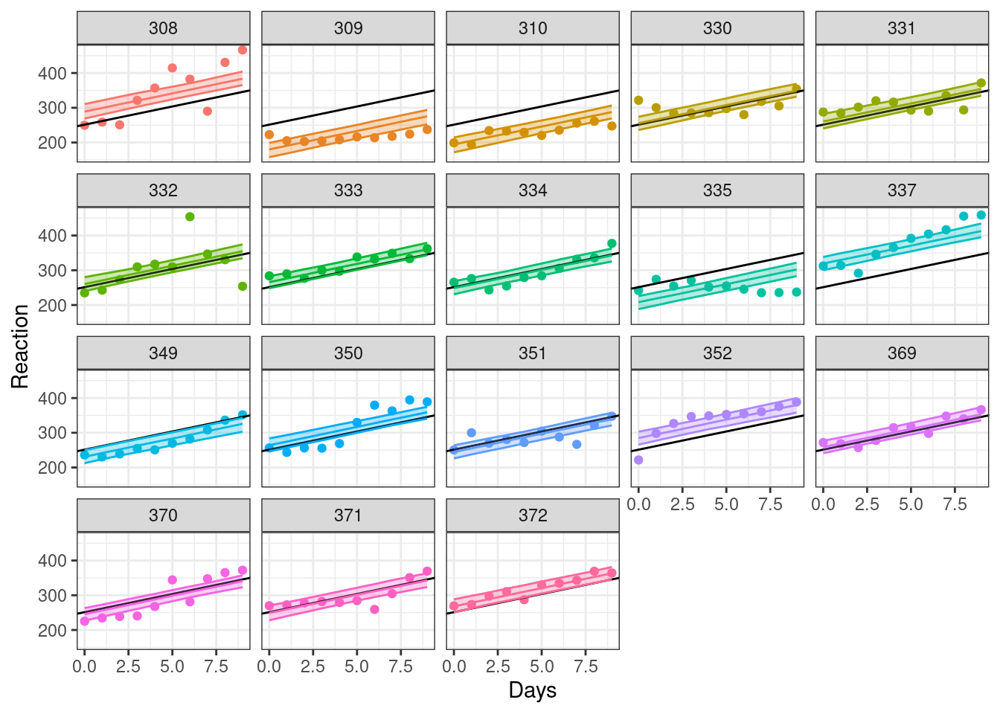
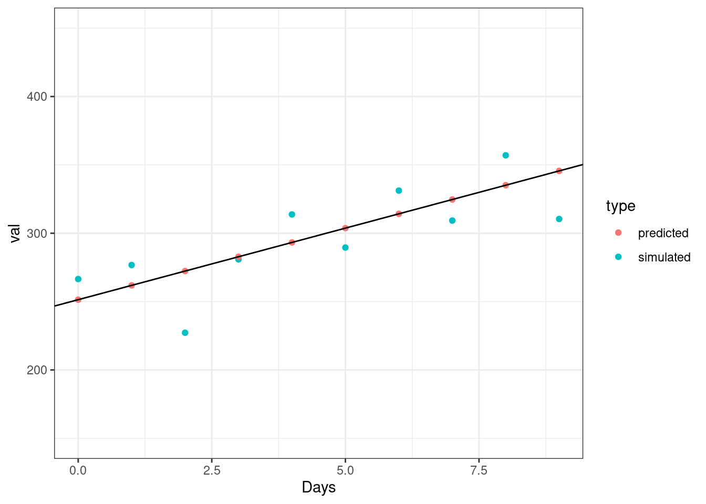

library(lme4)
library(tidyverse)
data("sleepstudy")A recent project with repeated measures data involved fitting a random intercept term, and eventually making predictions for new groups not in the training sample. Importantly there was a need for individual predictions rather than population mean level predictions. Now, you obviously cannot include the random effect for a level that is not in your data, so the idea was to make a population level prediction with an adequate prediction interval that reflected the variation from both the fixed and random effects. This is complicated.
In the help page for lme4::predict.merMod() is the following note:
- There is no option for computing standard errors of predictions because it is difficult to define an efficient method that incorporates uncertainty in the variance parameters; we recommend bootMer for this task.
There are some useful resources out there but it took a while to track down, so this post may serve as a good reference in the future.
Let’s go through an example using the famous sleepstudy data showing the average reaction time per day (in milliseconds) for subjects in a sleep deprivation study.
Linear Model
We would like to model the relationship between Reaction and Days
ggplot(sleepstudy, aes(Days, Reaction)) +
geom_point(show.legend = FALSE) +
theme_bw()
Fitting a basic linear model:
fit_lm <- lm(Reaction ~ Days, data = sleepstudy)
summary(fit_lm)
Call:
lm(formula = Reaction ~ Days, data = sleepstudy)
Residuals:
Min 1Q Median 3Q Max
-110.848 -27.483 1.546 26.142 139.953
Coefficients:
Estimate Std. Error t value Pr(>|t|)
(Intercept) 251.405 6.610 38.033 < 2e-16 ***
Days 10.467 1.238 8.454 9.89e-15 ***
---
Signif. codes: 0 '***' 0.001 '**' 0.01 '*' 0.05 '.' 0.1 ' ' 1
Residual standard error: 47.71 on 178 degrees of freedom
Multiple R-squared: 0.2865, Adjusted R-squared: 0.2825
F-statistic: 71.46 on 1 and 178 DF, p-value: 9.894e-15ggplot(sleepstudy, aes(Days, Reaction)) +
geom_point(show.legend = FALSE) +
geom_abline(slope = fit_lm$coefficients[2], intercept = fit_lm$coefficients[1]) +
theme_bw()But this ignores the fact these data are not independent. We have multiple observation per subject. Some look like a good fit, others not.
ggplot(sleepstudy, aes(Days, Reaction, col = Subject)) +
geom_point(show.legend = FALSE) +
geom_abline(slope = fit_lm$coefficients[2], intercept = fit_lm$coefficients[1]) +
facet_wrap(~Subject) +
theme_bw()Linear Mixed Effects Model
Let’s add a random intercept term for Subject. For simplicity we will leave out any other random effects.
fit <- lme4::lmer(Reaction ~ Days + (1|Subject), data = sleepstudy)
summary(fit)Linear mixed model fit by REML ['lmerMod']
Formula: Reaction ~ Days + (1 | Subject)
Data: sleepstudy
REML criterion at convergence: 1786.5
Scaled residuals:
Min 1Q Median 3Q Max
-3.2257 -0.5529 0.0109 0.5188 4.2506
Random effects:
Groups Name Variance Std.Dev.
Subject (Intercept) 1378.2 37.12
Residual 960.5 30.99
Number of obs: 180, groups: Subject, 18
Fixed effects:
Estimate Std. Error t value
(Intercept) 251.4051 9.7467 25.79
Days 10.4673 0.8042 13.02
Correlation of Fixed Effects:
(Intr)
Days -0.371New fitted lines can be drawn, showing the adjusted intercept for each subject (original regression line kept for reference).
sleepstudy |>
mutate(pred = predict(fit, re.form = NULL)) |>
ggplot(aes(Days, Reaction, col = Subject)) +
geom_point(show.legend = FALSE) +
geom_abline(slope = fit_lm$coefficients[2], intercept = fit_lm$coefficients[1], col = "grey") +
geom_line(aes(Days, pred), show.legend = FALSE) +
facet_wrap(~Subject) +
theme_bw()Bootstrapped Prediction Intervals (observed data)
Let’s try and generate prediction intervals using lme4::bootMer() as suggested.
First on the in-sample data.
# predict function for bootstrapping
predfn <- function(.) {
predict(., newdata=new, re.form=NULL)
}
# summarise output of bootstrapping
sumBoot <- function(merBoot) {
return(
data.frame(fit = apply(merBoot$t, 2, function(x) as.numeric(quantile(x, probs=.5, na.rm=TRUE))),
lwr = apply(merBoot$t, 2, function(x) as.numeric(quantile(x, probs=.025, na.rm=TRUE))),
upr = apply(merBoot$t, 2, function(x) as.numeric(quantile(x, probs=.975, na.rm=TRUE)))
)
)
}
# 'new' data
new <- sleepstudyNotes:
In the
predict()function we specifyre.form=NULLwhich identifies which random effects to condition on. HereNULLincludes all random effects. Obviously here you can compute individual predictions assuming you feed it with the correct grouping level in your data.In the
lme4::bootMer()function we setuse.u=TRUE. This conditions on the random effects and only provides uncertainly estimates for the i.i.d. errors resulting from the fixed effects of the model.
If use.u is TRUE and type==“parametric”, only the i.i.d. errors are resampled, with the values of u staying fixed at their estimated values.
boot <- lme4::bootMer(fit, predfn, nsim=250, use.u=TRUE, type="parametric")new |>
bind_cols(sumBoot(boot)) |>
ggplot(aes(Days, Reaction, col = Subject, fill = Subject)) +
geom_point(show.legend = FALSE) +
geom_abline(slope = fit_lm$coefficients[2], intercept = fit_lm$coefficients[1]) +
geom_line(aes(Days, fit), show.legend = FALSE) +
geom_ribbon(aes(ymin = lwr, ymax = upr), alpha = 0.3, show.legend = FALSE) +
facet_wrap(~Subject) +
theme_bw()
Dealing with unobserved data
However, this gets complicated if we want to make predictions for new subjects.
We can no longer condition on the random effects, as the new subject level will not have a fitted random intercept value. Instead we need to effectively make a population level prediction (i.e. set the random effect to zero.). This makes sense as we don’t know what the random effect ought to be for a given, unobserved subject.
But we don’t want the prediction interval to just cover the uncertainty in the population level estimate. If we are interested in individual predictions, how can we incorporate the uncertainly of the random effects in the prediction intervals?
Lets generate a new, unobserved subject.
new_subject <- tibble(
Days = 0:9,
Subject = factor("999")
)We provide a new predict function that doesn’t condition on the random effects by using re.form = ~0. This lets us input and obtain predictions for new subjects.
predfn <- function(.) {
predict(., newdata=new_subject, re.form=~0, allow.new.levels=TRUE)
}new_subject |>
bind_cols(predicted = predfn(fit)) |>
ggplot(aes(Days, predicted, col = Subject)) +
geom_point() +
geom_abline(slope = fit_lm$coefficients[2], intercept = fit_lm$coefficients[1]) +
theme_bw() +
ylim(c(150, 450))However using predict just results in a completely deterministic prediction as shown above.
An alternative approach is to use lme4::simulate() which will simulate responses for subjects non-deterministically using the fitted model object.
Below we can see a comparison on both approaches.
predfn <- function(.) {
predict(., newdata=new_subject, re.form=~0, allow.new.levels=TRUE)
}
sfun <- function(.) {
simulate(., newdata=new_subject, re.form=NULL, allow.new.levels=TRUE)[[1]]
}new_subject |>
bind_cols(simulated = sfun(fit)) |>
bind_cols(predicted = predfn(fit)) |>
pivot_longer(cols = c(3, 4), names_to = "type", values_to = "val") |>
ggplot(aes(Days, val, col = type)) +
geom_point() +
geom_abline(slope = fit_lm$coefficients[2], intercept = fit_lm$coefficients[1]) +
theme_bw() +
ylim(c(150, 450))
We can use this simulate() function in our bootstrapping to resample responses from the fitted model (rather than resampling deterministic population predictions).
This time we set use.u=FALSE to provide uncertainly estimates from both the model errors and the random effects.
If use.u is FALSE and type is “parametric”, each simulation generates new values of both the “spherical” random effects uu and the i.i.d. errors , using rnorm() with parameters corresponding to the fitted model x.
boot <- lme4::bootMer(fit, sfun, nsim=250, use.u=FALSE, type="parametric", seed = 100)new_subject |>
bind_cols(sumBoot(boot)) |>
bind_cols(predicted = predfn(fit)) |>
ggplot(aes(Days, predicted, col = Subject, fill = Subject)) +
geom_point() +
geom_abline(slope = fit_lm$coefficients[2], intercept = fit_lm$coefficients[1]) +
geom_line(aes(Days, fit), show.legend = FALSE) +
geom_ribbon(aes(ymin = lwr, ymax = upr), alpha = 0.3, show.legend = FALSE) +
theme_bw() +
ylim(c(150, 450))So while we don’t have a conditional mode of the random effect (because its a new subject) we can derive a bootstrapped estimate of the prediction interval by resampling the random effects and model errors on simulated data values.
Aside
For comparison, here is what the same prediction interval would look like if we just used an unconditional population prediction. While the overall gist is the same, despite also resampling both the random effects and the i.i.d. errors, the interval is narrower as it is resampling just the deterministic population predictions of the model.
boot <- lme4::bootMer(fit, predfn, nsim=250, use.u=FALSE, type="parametric", seed = 100)new_subject |>
bind_cols(sumBoot(boot)) |>
bind_cols(predicted = predfn(fit)) |>
ggplot(aes(Days, predicted, col = Subject, fill = Subject)) +
geom_point() +
geom_abline(slope = fit_lm$coefficients[2], intercept = fit_lm$coefficients[1]) +
geom_line(aes(Days, fit), show.legend = FALSE) +
geom_ribbon(aes(ymin = lwr, ymax = upr), alpha = 0.3, show.legend = FALSE) +
theme_bw() +
ylim(c(150, 450))References
Most of the material and code is taken from a variety of sources below. In particular the lme4 github issue. Also, the merTools package has a nice vignette comparing these methods with their own solution.
https://tmalsburg.github.io/predict-vs-simulate.html https://github.com/lme4/lme4/issues/388 https://cran.r-project.org/web/packages/merTools/vignettes/Using_predictInterval.html http://bbolker.github.io/mixedmodels-misc/glmmFAQ.html#predictions-andor-confidence-or-prediction-intervals-on-predictions